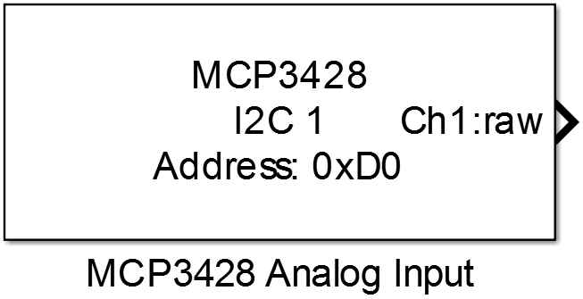

10.5. MCP3428 Analog Input
Reads the analog input voltage from the specified channel of an MCP3428 analog to digital converter.
10.5.1. Library
/I2C
10.5.2. Description
{kind=link}
This block reads the conversion result of the analog input voltage of one channel of the MCP3428 analog to digital converter. The voltage measured is the differential voltage between a channels positive and negative input, so for single ended input mode one has to connect the negativ channel input to ground. The different resolutions that can be configured result in different conversion rates. Since the internal reference voltage is 2.048V the input voltage of an channel must not exceed +/- 2.048V including the configured gain value.
10.5.3. Data Type Support
The block’s output data type depends on the configured mode parameter and can be:
- raw → int16
- voltage → single
- relative → single
The error output data type is boolean.
10.5.4. Parameters and Dialog Box

10.5.4.1. I2C Port
Selects the identifier of the I2C peripheral which is configured by an I2C Config block.
10.5.4.2. Device Address
Bus address of the used MCP3428 device.
10.5.4.3. Enable error output port
Enables an error output port with return values:
- “0” if no error occurred
- “1” if there was an error during communication
10.5.4.4. Channel Number
Selects the input channel of the MCP3428 device which should be measured.
10.5.4.5. Mode
Selects the output data type and range
- raw → -2^n … 2^n-1 (with n = resolution - 1)
- voltage → -2.048V … +2.048V
- relative → -1 … 1
10.5.4.6. Resolution
Selects the digital resolution.
10.5.4.7. PGA Gain
Selects the programmable gain amplifier to amplify the input signal.
Note
The input voltage must not be greater than 2.048V/gain.